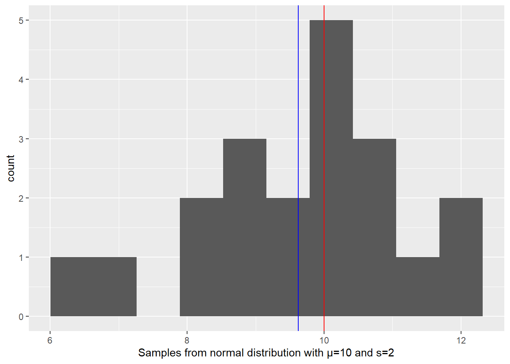
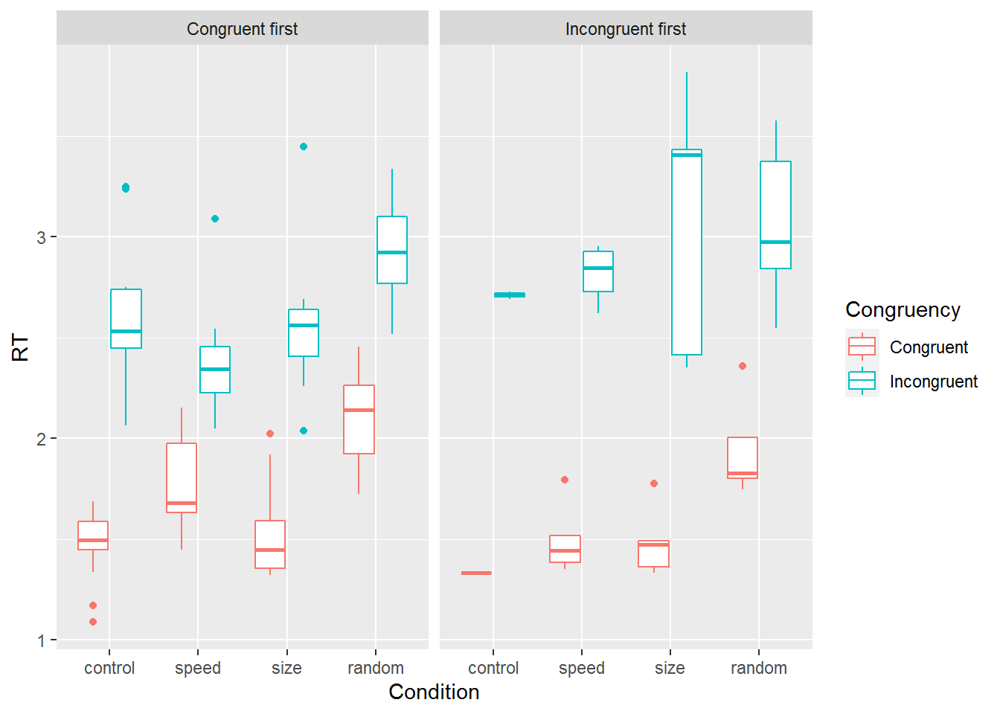
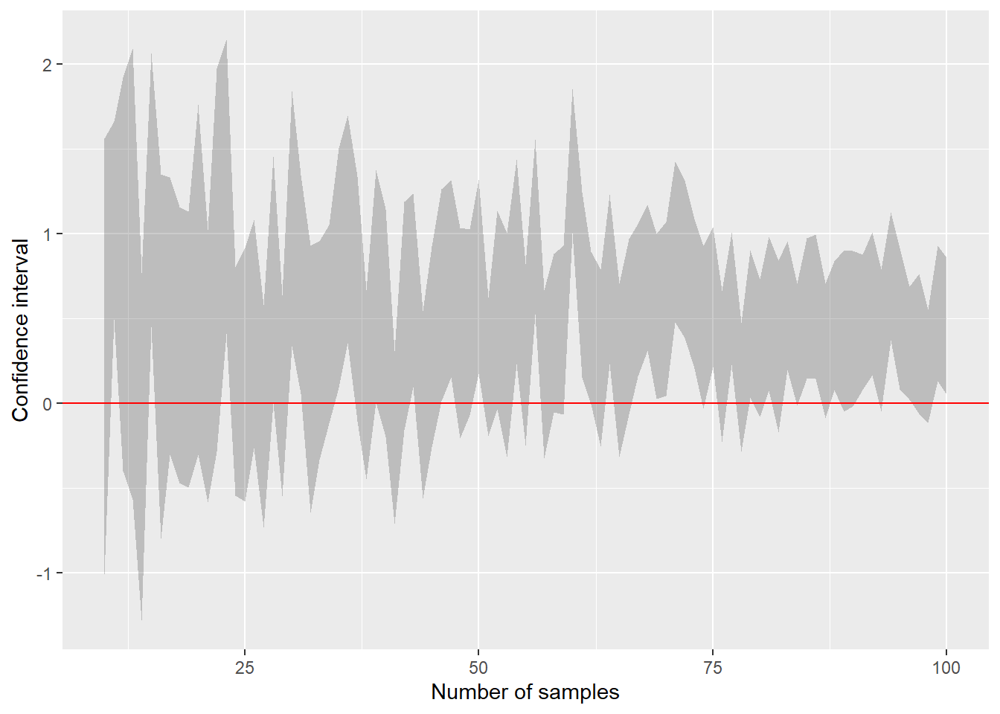
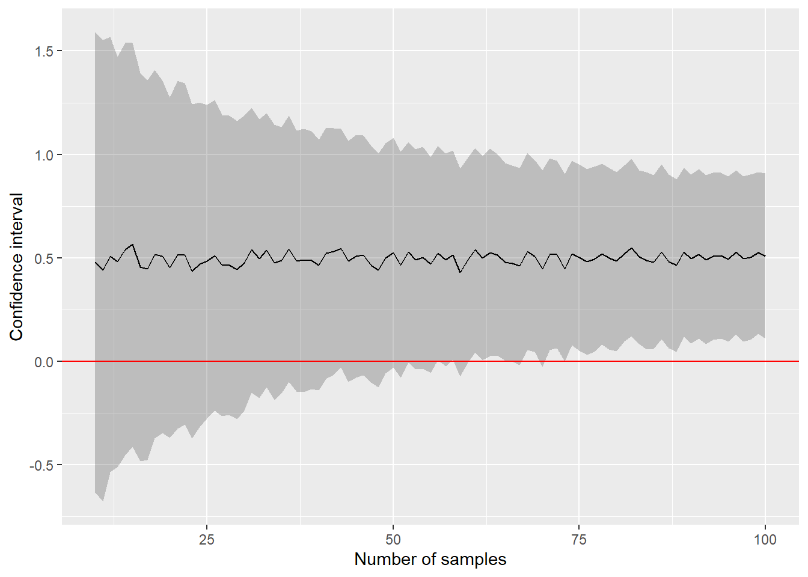
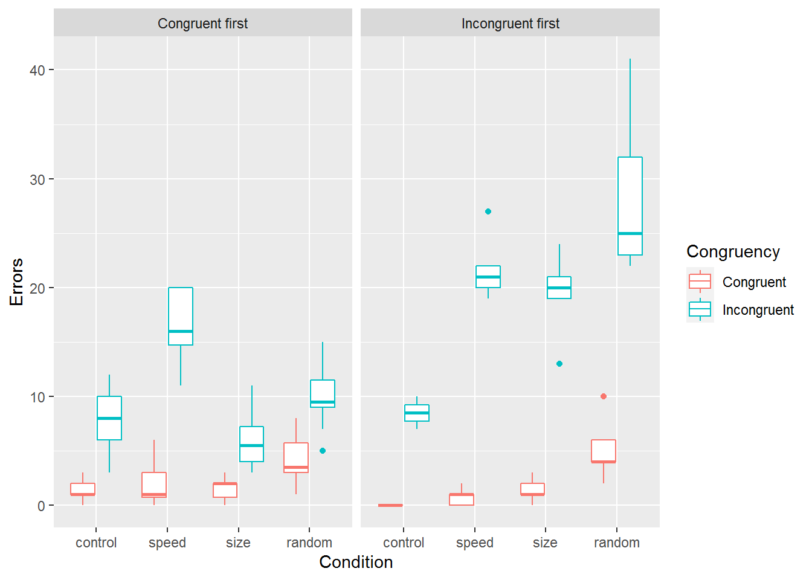
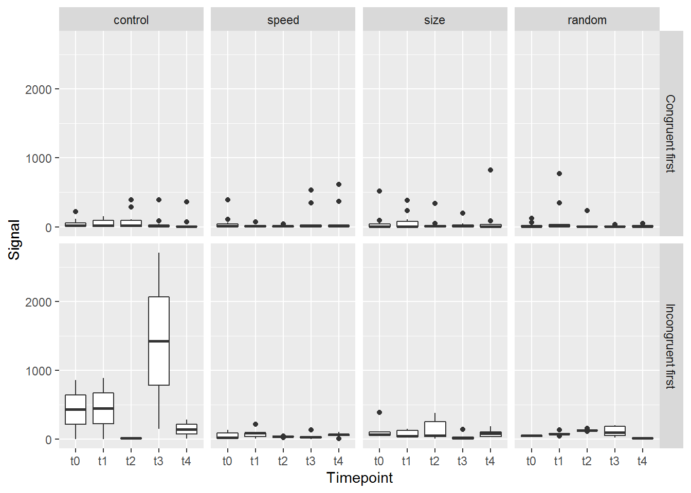

Seminar 13 Sampling and simulations
An ability to simulate and sample data is important whenever you analyze your data. Simulating data by sampling from predefined distributions allows you develop your analysis routine and ensure that it can correctly recover the anticipated effects even before you have seen or collected the data. Or even before you designed your study as such simulations form a core of the power analysis. Sampling your data paves way for non-paramatric bootstrapping and permutation testing that helps you whenever assumptions of parametric tests are violated or when you require an estimate that is not easy to derive analytically.
Grab exercise notebook before reading on.
13.1 Estimating mean of a normal distribution via resampling
Let us start very simple. Your task will be to generate samples from a normal distribution and then use resampling approach to estimate the original mean. Step one is simple, decide on mean and standard deviation of the normal distribution and generate 20 samples using rnorm() function (r<distribution functions generate random number based on distribution and its parameters). Check your results visually by plotting a histogram and adding a red vertical line to indicate the true mean of the distribution. We also need to see the difference between the true mean and the sample mean. So include a blue vertical line to indicate the sample mean. Run your code several times to appreciate variability of the data and, therefore, of the sample mean.
Your plot should look something like this.

Do exercise 1.
In the real life, we do not know the true mean which is why we need to collect the data to begin with. We also know that our sample mean is different from the true mean and we would like to know how much can we trust that value. In other words, we would like to know how much the sample mean would vary if we would draw some other samples from the same distribution. Theoretically, you want to draw samples from that “true” distribution directly. Practically, you do not have access to it, apart from replicating your experiment or study many times. Instead, you can make either an educated guess about shape and parameters of this distribution. This is a parametric approach used to compute estimators analytically, e.g., from the Student t Distribution. This is the way it is done in the t.test().
t.test(samples, mu = 10)##
## One Sample t-test
##
## data: samples
## t = -1.1076, df = 19, p-value = 0.2819
## alternative hypothesis: true mean is not equal to 10
## 95 percent confidence interval:
## 8.911319 10.335209
## sample estimates:
## mean of x
## 9.623264The other approach is to assume that your sample and, therefore, the data you collected is representative, so sampling from the data is just like sampling from the true distribution. This is obviously a strong assumption, particularly for small samples. However, this approach can work with any data, regardless of its distribution, and can be used to estimate statistic that is not easy to derive analytically. Thus, below we will use a brute force approach that relies on sheer computer power to compute the same confidence interval through resampling from the original data that you generated.
You will need three functions for this. First, the function that samples you data: sample(). It takes the original data (first parameter x) and randomly samples size items from it either with or without replacement (controlled by replace parameter that defaults to FALSE, so no replacement). In our case we want to get a sample of the size as the original data and we want to sample with replacement. Again, this way we pretend that we get another data sample, as if we would run the study again, and the probability of individual entries depends on how frequently they appear in the original data. For our purposes, we want to resample data and compute its mean. Write the code that does just that. Run the chunk several times to see how computed mean value changes due to resampling. As an exercise, set replace=FALSE and think what value do you expect and whether and how it would change when run the chunk again.
Do exercise 2.
Our second step is to repeat out first step many times. Say, 1000 times. The function that helps you to do this is replicate(). That takes number of repetitions (first parameter n) and an arbitrary R code that returns a value (our step one). Once you run it, you will get a vector of 1000 means from resampled data. Plot the histogram, overlaying the true and sample means as a reference

Our final step is to use quantile() function to compute 95% confidence interval. quantile() function takes a vector and computes a value that is greater than probs fraction of values in that vector. E.g., if probs=c(0.25, 0.75), it will return a two values, so that 25% of values are smaller than the first one and 75% of them are smaller than the second. Or, to put it differently, 50% of all values are with probs=c(0.25, 0.75). In our case, we want to compute 95% confidence interval, i.e., 95% of all values should be between the lower and upper confidence interval values. Once you run the code, you should see that 95% confidence interval from resampling is very similar to what the t-test reported (you want get the same values due to random sampling but they should also be close to the t-test’s analytic estimate).
## 95% CI: 8.940554 10.316821Do exercise 3.
13.2 Bootstrapping via boot library
The approach that we used is called “bootstrapping” and R conveniently has a boot library to simplify and automate bootstrapping and the confidence interval computation. You do not need to install it (boot comes with base R) but you need to import it via library(boot).
The key function is boot(). It has plenty of parameters that allow you to fine tune its performance but the three key compulsory parameters are
data: your original data you want to use for bootstrapping.statistic: function(s) that compute desired statistic, such as mean in our case.R: the number of bootstrap replicates (we used 1000 when we did this by hand).
For non-parametric bootstraping, like the one we used above, you will need to write the statistic function yourself even if you want to compute a statistic for which functions already exist, like mean or standard deviation. This is because statistic function must take at least two arguments: 1) the data that you passed and 2) how it should be resampled. By default, the second parameter will contain indexes of elements in the data. Note that bootstrap resamples with replacement, so the same index can appear more than once meaning that the same element was drawn more than once (just as we did above).
Your statistic function should like as following, of course with a better name and an actual code inside.
your_statistic_function <- function(data, indexes){
# here you compute desired statistic subsetting data using indexes
}Once you have this function, you can bootstrap samples via
booted_samples <- boot(samples, statistic = your_statistic_function, R=1000)Next, use function boot.ci() to compute the confidence interval. It takes your bootstrapped samples as a first parameter. You can also specify the confidence interval you are interested in (conf, defaults to 0.95) and type of the confidence interval. The one we computed above is called percentile (type="perc"), so this is the type you should specify. Once you run the code the output should be similar to that below.
## BOOTSTRAP CONFIDENCE INTERVAL CALCULATIONS
## Based on 1000 bootstrap replicates
##
## CALL :
## boot.ci(boot.out = booted_samples, type = "perc")
##
## Intervals :
## Level Percentile
## 95% ( 8.939, 10.242 )
## Calculations and Intervals on Original ScaleAs you can see, we very similar results as above (but for variation due to sampling). Thus, either approach will work but, in most cases, boot is more flexible solution (but do read on bootstrapping before using advanced options).
Do exercise 4.
13.3 More samples give you more confidence
In the exercises above, we computed confidence intervals for the mean based on 20 original samples. However, this was an arbitrary number I came up with. For the real study, you would like to know how the number of samples (participants, trials per condition, etc.) affects the width of the confidence interval. For example, assuming that our data comes from a normal distribution centered at 0.5 with a standard deviation of 2, how many samples do we need to be certain that mean is not a zero (confidence interval does not overlap with zero)?
The solution is to simulate this situation using different number of samples. We will need to package the simulation into function to make it simpler to work with it but let us start with plain script code first. Assume that variable (our future parameter) n_samples holds number of samples that you need to generate (set it to some arbitrary value, e.g., 10). You code should
- draw
n_samplesrandom samples from a normal distribution with mean of 0.5 and standard deviation of 2. - bootstrap 1000 estimates of the mean.
- compute percentile 95% confidence interval.
- store it into a tibble along with number of samples.
CI, the lower limit is CI$percent[4] and the upper is in CI$percent[5]. Your final tibble should look as follows (lowerCI and upperCI will be different for you because of random sampling).
| lowerCI | upperCI |
|---|---|
| 0.0859532 | 1.940723 |
Once you code is working, turn it into a function (I called it CI_for_sim) that takes n_samples as a parameter. Test it by calling it with n_samples = 10, the result should be exactly the same as before.
Do exercise 5.
| n_samples | lowerCI | upperCI |
|---|---|---|
| 10 | -1.0085864 | 1.5596448 |
| 11 | 0.4958008 | 1.6589707 |
| 12 | -0.3982136 | 1.9194213 |
| 13 | -0.5672158 | 2.0918783 |
| 14 | -1.2831007 | 0.7664541 |
| 15 | 0.4524685 | 2.0642302 |
There are different ways to do this but we will use this as an opportunity to learn about group_modify(), a function that allows you to apply a function to each group in your table. The only condition for such function is that it must return a table. All tables are bind together by row so you end up with a single table. A table that function returns can be of any length and have as many columns as required. Thus, group_modify() is a powerful way to compute many columns at the same time, expand, modify, or summarize the group. Here is an example of how you use it.
avg_mpg_per_cylinder <- function(mpg_values, cylinders_n) {
tibble(AvgMpgPerCylinder = mean(mpg_values) / cylinders_n,
Variance = var(mpg_values) / cylinders_n)
}
mpg %>%
group_by(cyl, year) %>%
group_modify(~avg_mpg_per_cylinder(.x$cty, .y$cyl)) %>%
knitr::kable()| cyl | year | AvgMpgPerCylinder | Variance |
|---|---|---|---|
| 4 | 1999 | 5.211111 | 4.4994949 |
| 4 | 2008 | 5.305556 | 1.3158730 |
| 5 | 2008 | 4.100000 | 0.0666667 |
| 6 | 1999 | 2.677778 | 0.4651515 |
| 6 | 2008 | 2.735294 | 0.6072490 |
| 8 | 1999 | 1.527778 | 0.3397436 |
| 8 | 2008 | 1.598837 | 0.4437984 |
The function takes a vector of values on fuel efficiency (mpg_values) and a number of cylinders (cylinders_n) and returns a table with mean and variance of fuel efficiency per cylinder. When calling this function inside the group_modify(), you need to use ~ before the function call (tells Tidyverse that you want to execute the code as is) and use .y$ for variables that define the group (would be cyl and year in our case) and .x$ for other columns.
Let us use group_modify() to simulate CIs for different number of samples. In a single pipe,
- create a tibble with a single column
n_samplesand assign some reasonable range of values to it (I went from 10 to 100) - group data by the number of samples
- simulate data and compute CI by calling your
CI_for_sim()function inside the group_modify().
| n_samples | avg | lowerCI | upperCI |
|---|---|---|---|
| 10 | 0.2716089 | -1.0085864 | 1.5596448 |
| 11 | 1.0479285 | 0.4958008 | 1.6589707 |
| 12 | 0.7077041 | -0.3982136 | 1.9194213 |
| 13 | 0.7223447 | -0.5672158 | 2.0918783 |
| 14 | -0.2562594 | -1.2831007 | 0.7664541 |
| 15 | 1.2952590 | 0.4524685 | 2.0642302 |
Do exercise 6.
It is much easier to understand the data once we visualize it. Plot the results using geom_ribbon() (note that you will need to set y aesthetics to some variable or value even though it is not used) and geom_hline(). The plot should look similar to the one below.

Do exercise 7.
As you can see in the plot above, confidence intervals vary a lot, so it is hard to be certain about the number of samples we require. Thus, we need to sample the bootstrap as well. Redo the analysis but now create a tibble with two columns — n_samples (go 10 to 100) and iteration (go 1 to 100) — and fill the table with all combinations of these values (you should get 9100 rows). Next, simulate and compute CI for each combination of n_samples and iteration and then compute average lower and upper interval for each n_samples value. Plot these averages as we did above and you should see a much smoother plot that makes it easier to decide on the required number of samples (probably around 75). Note, if your simulations takes too long, reduce the number of iterations or use a larger step between n_samples (not 1 as we did before but 2 or 5).

Do exercise 8.
13.4 Adding average sample mean
Let us redo the computation but add average sample mean to the plot. For this, you need to modify your CI_for_sim() function to include sample mean to the tibble that it return and average over mean for different iterations. Your final plot should resemble this. Note how estimated mean remains stable (unbiased) for different number of samples. It is our certainty about the value, as expressed by the confidence interval, that changes.

Do exercise 9.
13.5 Practice makes perfect
Our simulations above used normally distributed data. In psychological research, you often use binomial responses (yes/no, correct/mistake). Here, with of a confidence intervals depends both number of samples but also the probability of success (“yes” or “correct” response). Repeat the analysis using four assumed probabilities of success: 0.6, 0.7, 0.8, and 0.9. The logic is the same but you need to use rbinom() to generate random responses. Here, the size parameter is the number of samples that we draw, whereas n is how many times we draw these samples. It return a random number of successes out of size number of trials. E.g., here is how to generate number of successful trials assuming total of 20 trials and probability of success being 0.8.
rbinom(n=1, size=20, prob=0.8)## [1] 18Note that you can use n parameter to create many (iterations of) draws.
rbinom(n=10, size=20, prob=0.8)## [1] 17 18 16 15 12 18 17 14 15 14# same as
replicate(10, rbinom(n=1, size=20, prob=0.8))## [1] 16 17 17 16 16 18 18 17 18 16Here, I did not use boot library. Instead, I have utilized rbinom() to generate many draws of a given size and quantile() to compute percentile confidence interval. The final plot should look similar to this (but for quantitative differences due to sampling). As you can see, you need many trials when probability of success is closer to 0.5.

Do exercise 10.